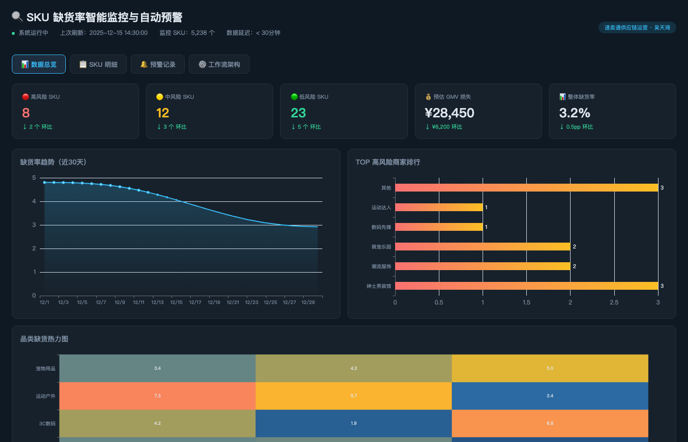
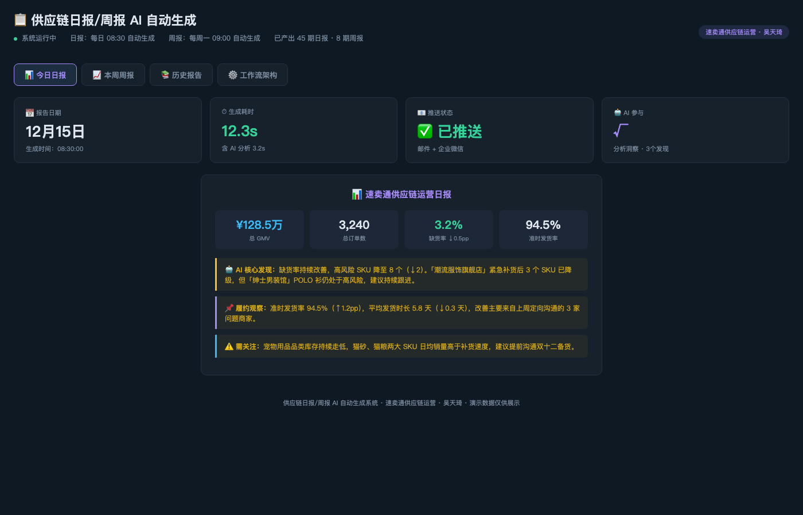
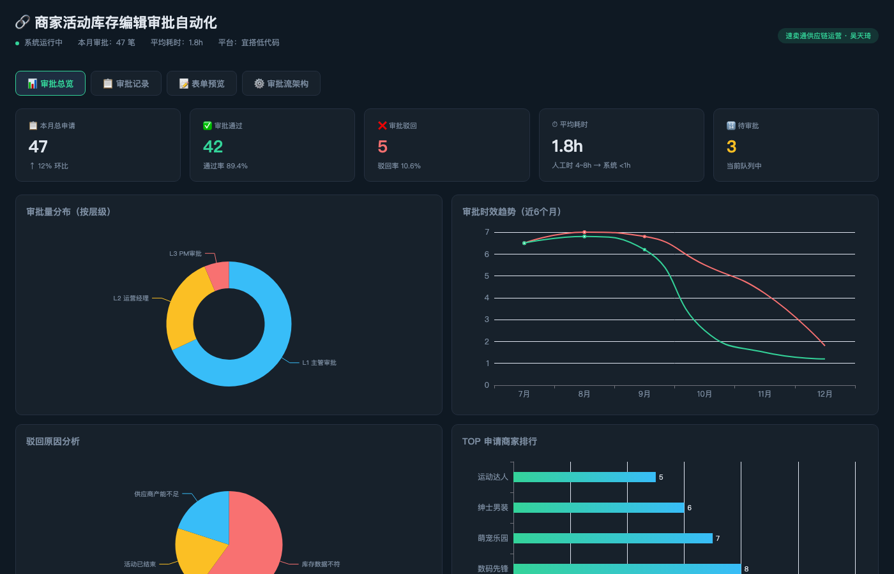

专业技能
📊 供应链运营
熟悉电商供应链售后链路，擅长通过数据分析定位缺货、履约等核心问题，联动商家与内部团队推动运营闭环。
🤖 AI 自动化工作流
熟练使用 Codex / Cursor 等 AI 编程工具辅助开发与自动化脚本编写；掌握 Airflow 任务调度、Python 数据处理与 Jinja2 模板引擎，能独立搭建端到端数据自动化工作流。
📈 数据分析
熟练 SQL 多表关联与窗口函数，精通 Excel 数据透视；能独立完成订单、库存、售后数据的取数、清洗与异常定位。
🔧 自动化工具
使用宜搭搭建业务流程表单与审批流；掌握 PowerShell / Python 脚本编写，熟悉 Playwright 自动化报告导出与定时任务配置。
📊 数据可视化
使用 FBI、Tableau、Power BI 搭建供应链监控看板，提升问题发现与风险预警效率；熟悉 ECharts 图表库与看板搭建。
🤝 商家对接与沟通
具备丰富的商家沟通经验，能有效协调多方诉求，推动售后规则优化与履约流程改善。
工作经历
- 以缺货率为核心指标，通过 SQL 与看板工具监控 SKU 维度数据，主动识别库存不足、发货延迟等异常商家，定位售后履约瓶颈。
- 运用 Codex 辅助搭建缺货率智能监控与自动预警工作流，数据清洗与报表效率提升 40%，问题发现效率提升 30%；同步搭建日报/周报 AI 自动生成系统，报告产出效率提升 50%+。联动商家端，针对数据表现异常的商家进行定向沟通，推动改善出货计划、库存备货与发货时效，有效降低平台整体缺货率。
- 参与售后体验优化，协同业务团队完善商家对接流程与异常处理机制，提升问题解决效率与商家配合度。
SQLCodexPythonFBIAirflow供应链运营
- 通过 SQL 取数与 Python 清洗，每月处理 50GB+ 业务数据，支撑库存预测与补货决策，数据准确率达 98%。
- 使用宜搭搭建库存管理流程表单与审批流，实现库存数据采集与流转自动化，减少人工录入错误。
- 运用 AI 工具辅助数据分析，加速数据探索与洞察生成，提升报告输出效率 25%。
- 完善销售与库存指标体系，每月输出 3+ 份分析报告，助力供应链优化与运营决策。
- 复盘大促活动库存表现，优化备货策略，提升库存周转率。
SQLPython宜搭AI工具库存分析
- 负责数据采集、录入与备份，每周处理 10GB+ 原始数据，录入准确率 99%。
- 清洗并修正异常、缺失与重复数据，每月处理 30万+ 条记录，一致性达 98%。
AI 工作流项目
- 针对 5,000+ 活跃 SKU，构建 SQL 定时取数 → Python 清洗 → 异常检测 → FBI 看板 → 企业微信/钉钉预警 全链路自动化闭环。
- 使用 Codex 辅助编写 SQL 多表关联查询、Python 数据清洗脚本与预警推送逻辑，开发效率提升 50%+，日均自动识别异常 SKU 200+。
- 缺货发现时效从人工 T+1 → 系统实时（<30 分钟），问题发现效率提升 30%。
- 实体产出：10+ SQL 模板、3 个 Python 脚本（~800 行）、FBI 监控看板、分级预警推送记录。
SQLPythonPandasCodexFBICrontab企业微信API
- 搭建 自动取数 → 指标计算 → AI 分析生成 → Jinja2 模板渲染 → 邮件推送 全自动报告流水线。
- 使用 Codex 辅助编写 report_engine.py（~200 行）、Jinja2 HTML 模板、AI 分析 Prompt，将结构指标输入 Prompt 自动生成叙述性分析段落。
- 单次报告制作从 2~3 小时 → 10~15 分钟，效率提升 90%，实现 7×24 全自动运行。
- 实体产出：Python 报告引擎、日报/周报双模板、可用浏览器打开的 HTML 报告样例。
PythonJinja2CodexSMTPCrontabHTML/CSS
- 基于宜搭低代码平台搭建标准化审批流，实现商家提交 → 自动校验 → 规则引擎分级 → L1/L2/L3 审批 → API 回写 → 钉钉/企微通知全链路。
- 使用 Codex 辅助生成宜搭表单 JSON Schema、分级路由 JS 逻辑、API 回写脚本（含 HMAC 签名与重试机制）。
- 审批时效从人工 4~8 小时 → 系统 <1 小时，100% 审批留痕可追溯。
- 实体产出：宜搭表单 + 三级审批流配置、API 回写脚本（~120 行）、四种场景通知模板。
宜搭Codex低代码REST API钉钉企业微信
其他项目经历
- 汇总经营、库存、推广等 20+ 项核心指标，完成同比与季度拆解，支撑库存优化决策。
- 使用宜搭搭建库存数据上报与审批流程，实现各渠道库存数据实时同步，减少数据录入错误。
- 分析渠道 ROI 并优化投放结构，全年推广费占比由 8.3% 降至 7.04%，GMV 达 6572 万（超 KPI 6%）。
- 清洗 66.6 万老客数据，运用 K-means 聚类算法划分客群，支撑精准补货与库存规划。
- 利用 AI 工具辅助客群分析与策略生成，提升运营方案设计效率，按季度落地差异化运营策略。
- 老客复购率由 15% 提升至 19%，新增 GMV 172.9 万。
教育经历
西安邮电大学（非全日制）
计算机科学与技术 · 本科
2026.03 - 2028.06
石家庄信息工程职业学院
艺术设计 · 大专
2020.09 - 2022.06
🤖 AI 自动化工作流项目展示
以下为三个 AI 工作流系统的实际运行界面截图，完整交互版请扫描二维码或点击链接查看。

🔍 SKU 缺货率智能监控

📋 日报/周报 AI 自动生成

🔗 商家库存编辑审批自动化
📂 AI 工作流作品集
SQL · Python · Jinja2 · 宜搭
完整项目源码与产出样例
🖥 打开作品集 →